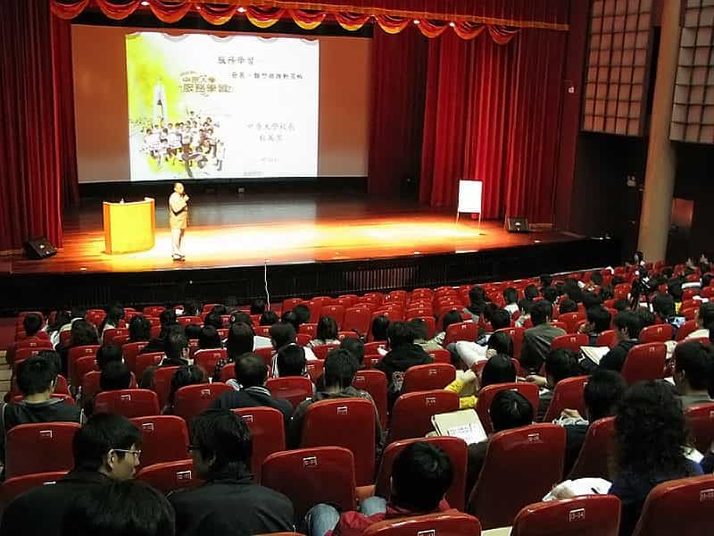
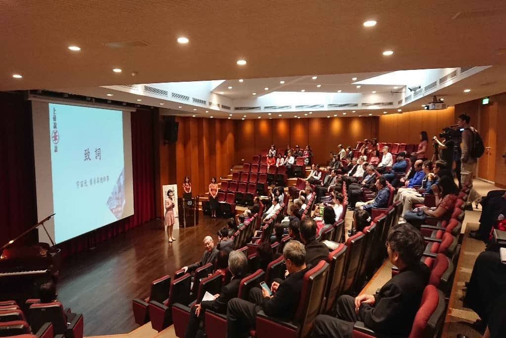
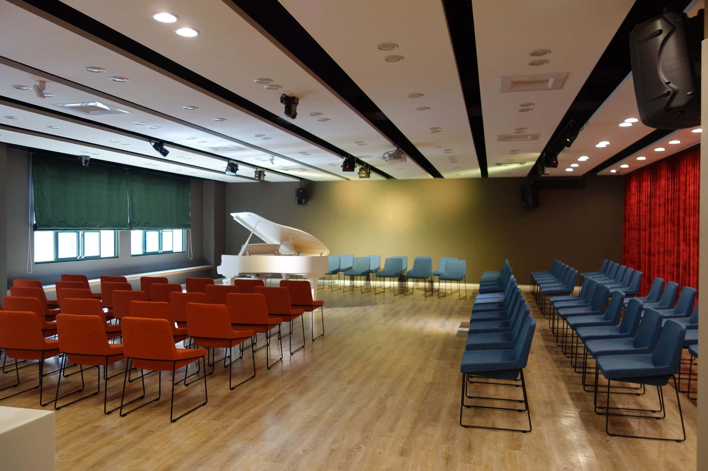
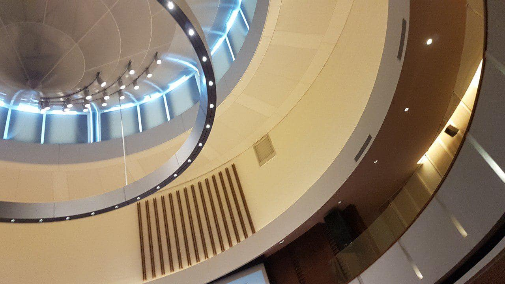

介紹：音樂廳位於中原大學活動中心的一樓(影印部旁)，創辦以來除了經常協辦政府及企業藝文活動，亦協助多所學校作為戶外教學的參觀場所，老師及學員們也不定期舉辦成果發表，讓更多民眾能感受到藝文對於人類的精神生活存在著重要與充實的一面。

介紹：中原大學相當重視學生專業能力與品格涵養，以多元豐富的通識藝文活動，形塑學生博雅知性的人文氣質。位於中原大學圖書館一樓的秀德廳亦是做為校內推動博雅活動的重要基地，舉凡校內外各類研討會、講演，以及圖書館博雅電影院等活動均時常在此舉行。「秀德廳」的建置，不僅彰顯人子孝思、感懷母恩，更是全人博雅精神的典範！

介紹：風雅頌藝文廳位於中原大學真知教學大樓的二樓，為音樂表演, 大師演講, 藝文欣賞的優雅空間，也為桃園中壢區帶來每周兩場精采的藝文活動。

介紹：瑞麗堂位於中原大學全人村中棟的二樓，其場地投影位置適中、燈光柔和、環境整潔、氣氛典雅，加上圓形場地帶來的無距離感，非常適合演講或者音樂會的舉辦。